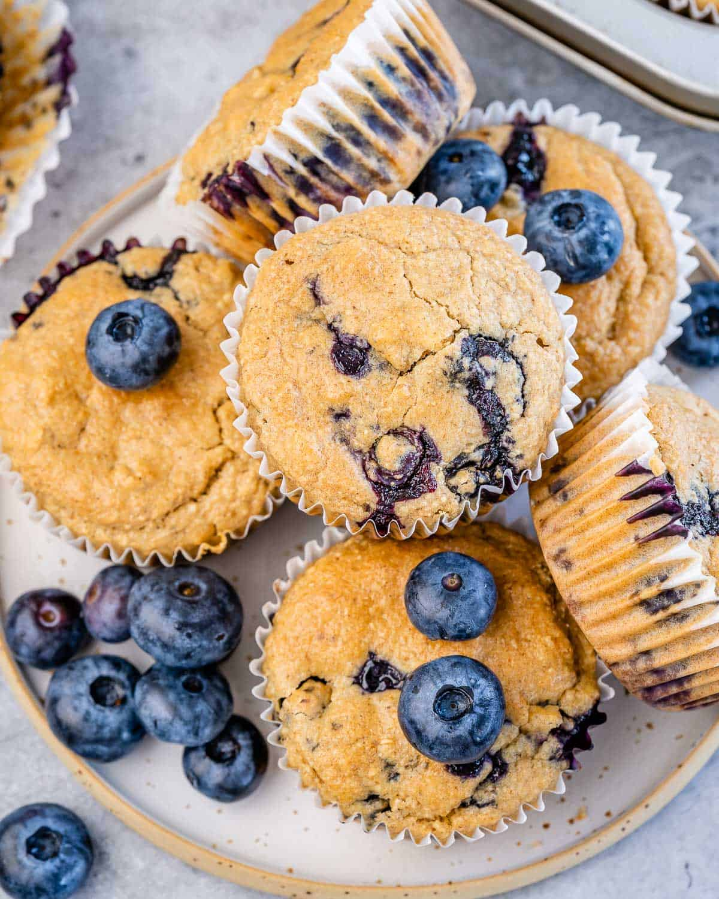

Blueberry Muffins
These blueberry oatmeal muffins are packed with flavor, loaded with
fresh blueberries, and made with oat flour, maple syrup, and no butter.
They come out fluffy and so tasty. Hard to believe that they are made
with no refined sugar, no butter, and no flour. Also, the flour used is
simply oat flour which you can make on your own using rolled oats! You
will love these healthy blueberry oatmeal muffins which can be enjoyed
as a quick on-the-go breakfast, a snack, or a healthy dessert option.
